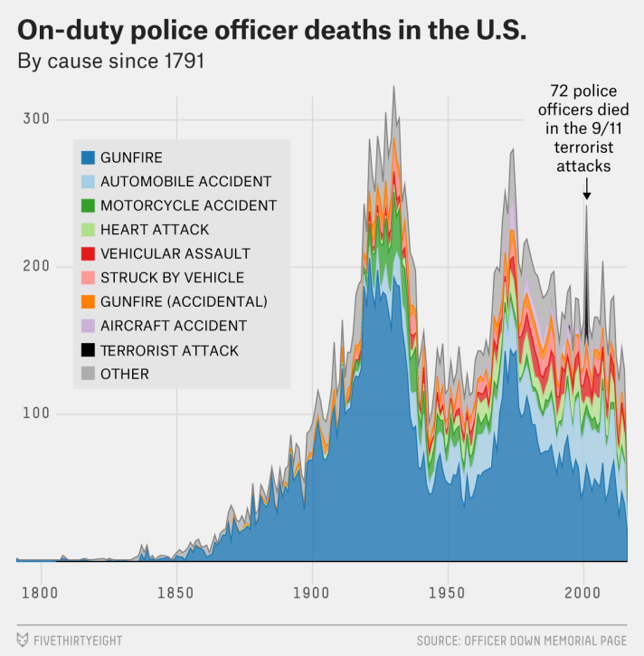
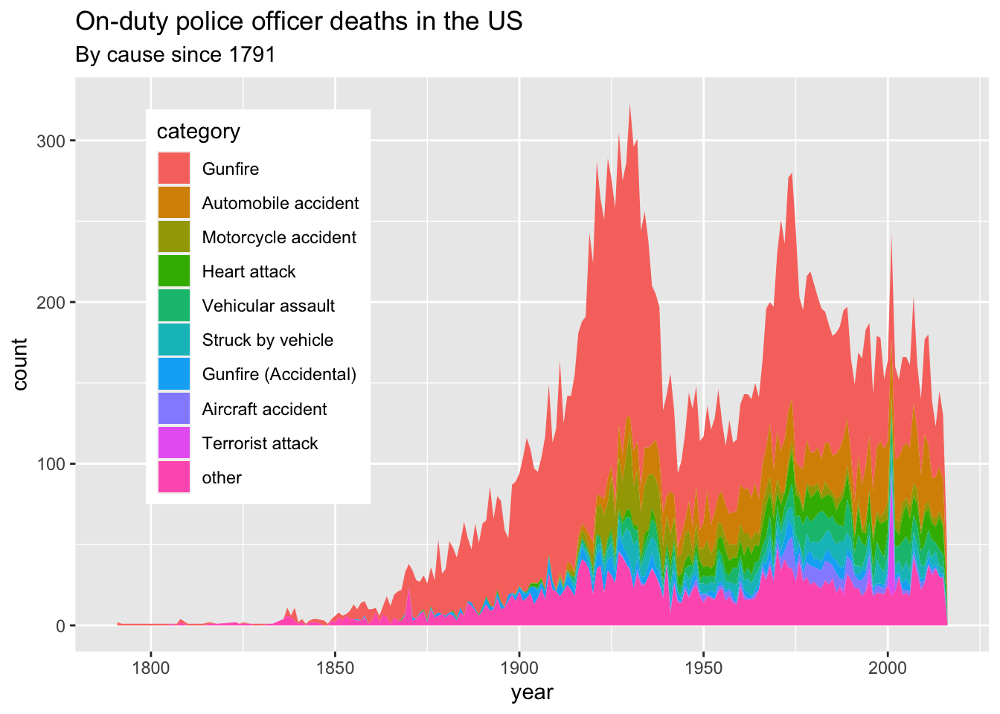

Visualization Exercise: On-duty police officer deaths in the US
The below plot from FiveThirtyEight is what I’m trying to replicate. The data for on-duty police officer deaths comes from the Officer Down Memorial Page, started in 1996 by a college student who is now a police officer and who continues to maintain the database. It extends much further back than the Federal Bureau of Investigation’s data — all the way back to 1791, when two officers were killed, both in New York state. (It hadn’t yet been updated with the Dallas shootings as of Friday afternoon.) National data on the number of police officers isn’t available that far back, but the rate of police officers per the overall population has declined significantly over the years.
Dallas shooting cleaning
Loading required libraries
Data Loading
# path to data
# note the use of the here() package and not absolute paths
data_location<- here::here("Data","all_data_police_deaths.csv")
rawdata <- readr::read_csv(data_location)Cleaning the fields: extracting cause of death, year
clean_data <- rawdata %>%
mutate(
cause_short = gsub('Cause of Death: ', '', cause),
date = mdy(gsub('EOW: ', '', eow)),
year = year(date),
canine = ifelse(substr(person, 0, 2) == 'K9' & substr(person, 0, 10) != 'K9 Officer', TRUE, FALSE)
)Glimpse of the data
glimpse(clean_data)Rows: 22,800
Columns: 8
$ person <chr> "Constable Darius Quimby", "Sheriff Cornelius Hogeboom", "…
$ dept <chr> "Albany County Constable's Office, NY", "Columbia County S…
$ eow <chr> "EOW: Monday, January 3, 1791", "EOW: Saturday, October 22…
$ cause <chr> "Cause of Death: Gunfire", "Cause of Death: Gunfire", "Cau…
$ cause_short <chr> "Gunfire", "Gunfire", "Gunfire", "Gunfire", "Gunfire", "Gu…
$ date <date> 1791-01-03, 1791-10-22, 1792-05-17, 1794-01-11, 1797-11-1…
$ year <dbl> 1791, 1791, 1792, 1794, 1797, 1804, 1806, 1807, 1808, 1808…
$ canine <lgl> FALSE, FALSE, FALSE, FALSE, FALSE, FALSE, FALSE, FALSE, FA…Split department and state
dept_state <- strsplit(clean_data$dept, ",(?=[^,]+$)", perl=TRUE)
dept_state_df <- data.frame(matrix(unlist(dept_state), nrow=length(dept_state), byrow=T),stringsAsFactors=FALSE) %>%
rename(dept_name=X1, state=X2)
clean_data <- clean_data %>%
bind_cols(dept_state_df)Glimpse of this dataframe
glimpse(dept_state_df)Rows: 22,800
Columns: 2
$ dept_name <chr> "Albany County Constable's Office", "Columbia County Sheriff…
$ state <chr> " NY", " NY", " NY", " US", " SC", " NC", " NY", " KY", " ME…Remove canines
persons_data <- clean_data %>%
filter(canine == FALSE) Filter for major categories where count of cause of death is at least 20
large_categories <- persons_data %>%
group_by(year, cause_short) %>%
summarize(count = n()) %>%
data.frame() %>%
filter(count >= 20) %>%
select(cause_short) %>%
unique()Glimpse of data
glimpse(large_categories)Rows: 8
Columns: 1
$ cause_short <chr> "Gunfire", "Motorcycle accident", "Automobile accident", "…Categories of cause of death to plot
cat_to_plot <- c(large_categories$cause_short, "Gunfire (Accidental)")?arrange
Arranging count of cause of death in descending order
plot_order <- persons_data %>%
mutate(cat = ifelse(cause_short %in% cat_to_plot, cause_short, 'other')) %>%
group_by(cat) %>%
summarize(count = n()) %>%
data.frame() %>%
arrange(desc(count)) %>%
extract2(1)Move cause of death ‘other’ to the end
plot_order <- c(plot_order[! (plot_order == 'other')], 'other')Glimpse of data
glimpse(plot_order) chr [1:10] "Gunfire" "Automobile accident" "Motorcycle accident" ...Create data for visualization
data_for_plot <- persons_data %>%
mutate(category = ifelse(cause_short %in% cat_to_plot, cause_short, 'other')) %>%
group_by(year, category) %>%
summarize(count = n()) %>%
data.frame() %>%
spread(category, count)Set missing to zero
data_for_plot[is.na(data_for_plot)] <- 0Glimpse of data
glimpse(data_for_plot)Rows: 202
Columns: 11
$ year <dbl> 1791, 1792, 1794, 1797, 1804, 1806, 1807, 1808,…
$ `Aircraft accident` <dbl> 0, 0, 0, 0, 0, 0, 0, 0, 0, 0, 0, 0, 0, 0, 0, 0,…
$ `Automobile accident` <dbl> 0, 0, 0, 0, 0, 0, 0, 0, 0, 0, 0, 0, 0, 0, 0, 0,…
$ Gunfire <dbl> 2, 1, 1, 1, 1, 0, 1, 2, 1, 1, 1, 1, 0, 0, 0, 1,…
$ `Gunfire (Accidental)` <dbl> 0, 0, 0, 0, 0, 0, 0, 0, 0, 0, 0, 0, 0, 0, 0, 0,…
$ `Heart attack` <dbl> 0, 0, 0, 0, 0, 0, 0, 0, 0, 0, 0, 0, 0, 0, 0, 0,…
$ `Motorcycle accident` <dbl> 0, 0, 0, 0, 0, 0, 0, 0, 0, 0, 0, 0, 0, 0, 0, 0,…
$ other <dbl> 0, 0, 0, 0, 0, 1, 0, 2, 0, 0, 0, 1, 1, 2, 1, 1,…
$ `Struck by vehicle` <dbl> 0, 0, 0, 0, 0, 0, 0, 0, 0, 0, 0, 0, 0, 0, 0, 0,…
$ `Terrorist attack` <dbl> 0, 0, 0, 0, 0, 0, 0, 0, 0, 0, 0, 0, 0, 0, 0, 0,…
$ `Vehicular assault` <dbl> 0, 0, 0, 0, 0, 0, 0, 0, 0, 0, 0, 0, 0, 0, 0, 0,…Selecting variables yer, category of death, and count. Also arranging the category
data_for_plot <- data_for_plot %>%
gather(category, count, -year) %>%
mutate(category = factor(category, levels=plot_order)) %>%
arrange(category)Plot of Deaths by cause
p_area <- ggplot(data_for_plot, aes(x=year, y=count, group=category, order=category)) +
geom_area(aes(fill=category), position='stack')
p_area + ggtitle("On-duty police officer deaths in the US", "By cause since 1791") +
theme(legend.position = c(0.2,0.6))
Reproducing this graph was an amazing experience. It was pretty fun to go through every possible detail of the original plot and try to perfectly reproduce it. Going through that process of “trying to be perfect” actually helps me learned other cool stuff that ggplot has to offer. One is how to manipulate the legend position in the graph.